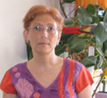
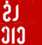
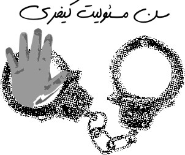

تغییر برای برابری
تغییر برای برابریبرخی از جوانان ایرانی در ونکور به منظورهمراهی با کمپین یک میلیون امضا فعالیت خود را آغاز کردند. آنان قصد دارند با تمرکز بر مطالبات کمپین یک میلیون امضا برای برابری جنسیتی در ایران تلاش کنند.
پذيرش > واژه كليدها > صفحه بندی > ستون وسط
ستون وسط
مقالهها
-
 ما دختران و پسران ایران بانو/ کمپین یک میلیون امضا در ونکوور
ما دختران و پسران ایران بانو/ کمپین یک میلیون امضا در ونکوور
23 مارس 2010, بوسيلهى pari -
در ایران هاله سحابی در یمن نوریا وابل / استمداد زنان یمنی ازجامعه جهانی
4 ژوئن 2011نوریا وابل، یکی از رهبران جنبش مسالمت آمیز، حوالی ساعت 16 امروز بشدت از طرف پلیس زن و ماموران امنیتی در طایز مورد ضرب و جرح قرار گرفت. این ضرب و جرح منجر به سقط جنین او در پنجمین ماه بارداریش شد. ماموران مرد نیروهای امنیتی به اتفاق پلیس زن یک آکتیویست دیگر را مورد حمله قرار داده وبه سرش ضربه وارد کردند طوری که وی بی هوش شد.
-
بیانیه بیش از 800 نفر از فعالان جنبش زنان: فرزندان جنبش زنان را آزاد کنید
30 ژوئيه 2009, بوسيلهى pariمردم، به خیابان نگاه کنید، این همان خیابانی است که در تمام این سالها فعالان اجتماعی، بویژه فعالان جنبش زنان در آن حقوق از دست رفته خود را با زبان سکوت و در کمال آرامش و مدنیت طلب کرده اند. این همان خیابانی است که آنها کوچه به کوچه و امضا به امضا در آن از "حق" سخن گفته اند. این همان خیابانی است که در آن از زبان "سنگ" گلایه کرده اند. امروز ما تجربه های پیشین را در گستره ای به وسعت ایرانمان بازمی خوانیم.
-

مرگ بانوی بزرگ با قلبی گشاده : مریم یوسفی از حامیان کمپین یک میلیون امضا در فرانسه درگذشت
16 ژوئيه 2009, بوسيلهى pariشیدان وثیق: بانوی من، بانوی ما، این بزرگ زن کوچک من، مریم یوسفی، که همواره، از خود، بسیار می داد، برای واپسین بار و این بار، با دادن همه ی خود، ازمیان ما رفت.
-
گزارشی غیر رسمی از وضعیت زنان در ایران
22 آوريل 2010, بوسيلهى pariدر پنجاه و چهارمین نشست کمیسیون مقام زن درسازمان ملل متحد، گزارش غیر رسمی از وضعیت زنان درایران که توسط برخی از فعالان جنبش زنان تهیه شده بود دراختیار شرکت کنندگان در کنفرانس قرارگرفت. چکیده ای از این گزارش در سخنرانی رضوان مقدم در این نشست نیز ارائه شد.
-

گفتگو با نادر فتوره چی/ سوژگی و گسست از نوستالژی
31 ژوئيه 2009, بوسيلهى pariکمپین به خودی خود واجد حقیقتی مجزا از سیاست مردم نیست. بنابراین اگر فعالان و اعضای آن هم اکنون به سوژه های حامل حقیقت تبدیل شده اند، پس لابد به هیچ نام هویتی ای نمی اندیشند. خصلت سوژه شدن همین بریدن از نوستالژی های سیاسی و البته مطالبات منفعتی/هویتی و به یک معنا واماندن در یک فضای فرهنگی است.
-

نگاهی به وضعیت کودکان در معرض اعدام در کانون اصلاح و تربیت
15 سپتامبر 2010جود بیش از 212 کودک محکوم به اعدام در زندان های کشور و مسائل مرتبط با بازگشت به جامعه تعدادی از این کودکان پس از بخشش اولیاء دم و پرداخت دیه و اجرای حکم اعدام تعداد زیادی از آنان طی دهه اخیر، نشان از ضرورت پرداختن به مسائل و مشکلات آنان در طی این روند است...
-
گزارش توصیفی یافته های نظرسنجی کمپین
23 ژانويه 2011پیش از این و در سالگرد کمپین یک میلیون امضا، گزارشی مختصر از نتیجه ی یک تحقیق میدانی که توسط فعالان کمپین انجام گرفته بود منتشر شد. آنچه در پی می آید، نتایج تفصیلی همان کار تحقیقی است، که در شهریور ماه 1389 توسط جمعی از فعالان کمپین یک میلیون امضاء در سطح شهر تهران انجام شد، جامعه آماری این تحقیق که با روش پیمایش انجام شد، شهروندان تهرانی بودند؛ و حجم نمونه ای معادل 295 نفر توسط پرسشگران در 13 محله تهران به صورت اتفاقی انتخاب شدند...
-
 نظامی گری مظهر خشونت مطلق
نظامی گری مظهر خشونت مطلق
28 نوامبر 201125 نوامبر همزمان با روز مبارزه با خشونت علیه زنان، اتحادیه بین المللی زنان برای صلح و آزادی در سوئد، ضمن بزرگداشت این روز فیلم "خلافکاران (The Whistleblower)" را به نمایش گذاشت. فیلم در مورد پلیس جوان آمریکایی، کتی است که به عنوان سرباز صلح در بوسنی شروع به کار می کند. او قصد دارد در نو سازی این کشور کمک کند، اما در آنجا با واقعیت وحشتناک دخالت سربازان سازمان ملل در خرید و فروش انسانها و تجاوز جنسی به زنان منطقه، مواجه می شود.
-
وحشت سوری ها از قدم گذاشتن در راه لیبی
25 نوامبر 2011, بوسيلهى pariنوال یاجزی بیش از نیم قرن است که برای حقوق زنان مبارزه کرده است، از سن 16 سالگی. هم اکنون زنان خواستار متوقف کردن کشتارها هستند، و او مطمئن است که تغییر در راه است، بدون توجه به اینکه رژیم سقوط کند یا بر سر کار بماند. اما شرایط بحرانی است. بدترین اتفاق ممکن جنگ داخلی است. او در هراس است که خشونت های رژیم سوریه، زمینه ساز یک مداخله نظامی بین المللی بشود.
0 | ... | 80 | 90 | 100 | 110 | 120 | 130 | 140 | 150 | 160 | ... | 450